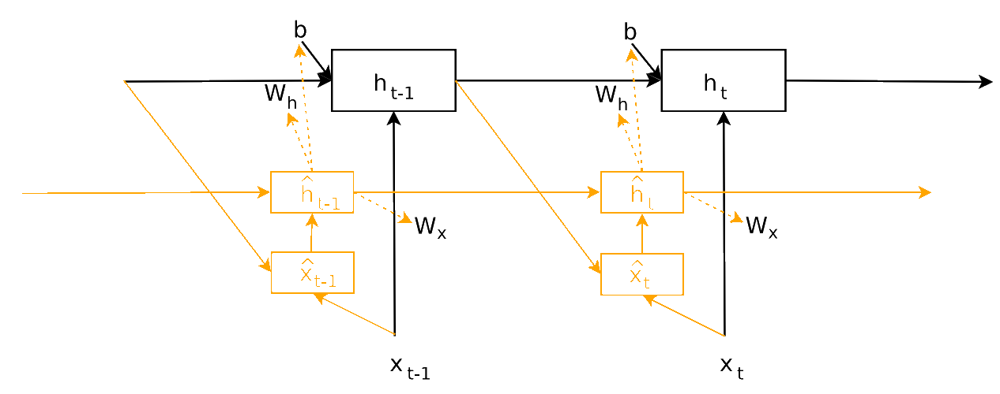

Learnable parameters are $W_i$, $B_i$, $W_{out}$, $B_{out}$, together with all $z_j$. Note that there are much fewer parameters than in CNNs. The two-layer hypernetwork architecture allowes for $W_{out}$ to be shared across filters, which further helps reduce the number of parameters compared to a one-layer hypernetwork.
Variable kernel size
typically the kernel dimensions are integer multiples of a basic size
generate kernels for this basic size
if we require a larger kernel we will concatenate multiple basic kernels together
Dynamic Hypernetworks - relaxed weight sharing
hypernetwork is a RNN - HyperRNN
let main RNN hidden state be $h_t$ and that for hyper RNN be $\hat{h}_t$
two networks are trained jointly
Main RNN parameters are now time-dependent through their dependences on $z_h, z_x, z_b \in \mathbb{R} ^ {N_z}$:
\begin{equation}
\label{eq:main_rnn}
h_t = \phi (W_hh_{t-1} + W_xx_t + b) \rightarrow h_t = \phi \left (W_h(z_t)h_{t-1} + W_x(z_x)x_t + b(z_b) \right)
\end{equation}
where
\begin{equation*}
W_h(z_h) = \langle W_{hz}, z_h\rangle, \text{ where } W_{hz} \in \mathbb{R}^{N_h \times N_h \times N_z} \text{ and result } W_h(z_h) \in \mathbb{R}^{N_h \times N_h}
\end{equation*}
\begin{equation*}
W_x(z_x) = \langle W_{xz}, z_x\rangle, \text{ where } W_{xz} \in \mathbb{R}^{N_h \times N_x \times N_z} \text{ and result } W_x(z_x) \in \mathbb{R}^{N_h \times N_x}
\end{equation*}
\begin{equation*}
b(z_b) = W_{bz}z_b + b_o, \text{ where } W_{bz} \in \mathbb{R}^ {N_h \times N_z}, b_0 \in \mathbb{R}^{N_h} \text{ and result } b(z_b) \in \mathbb{R}^{N_h}\end{equation*}
We use HyperRNN network to generate $z_h, z_x, z_b \in \mathbb{R} ^ {N_z}$ from HyperRNN hidden state $\hat{h}_{t-1}$:
\begin{equation*}
\hat{x}_t = \text{concat}(h_{t-1},x_t) \text{ - input to hyper RNN}
\end{equation*}
\begin{equation*}
\hat{h}_t = \phi \left ( W_{\hat{h}} \hat{h}_{t-1} + W_{\hat{x}} \hat{x}_{t} + \hat{b} \right ) \text{ - hidden state of hyper RNN}
\end{equation*}
where $W_{\hat{h}} \in \mathbb{R}^{N_{\hat{h}} \times N_{\hat{h}}}$, $W_{\hat{x}} \in \mathbb{R}^{N_{\hat{h}} \times (N_h + N_x)}$, $b \in \mathbb{R}^{N_{\hat{h}}}$.
\begin{equation*}
z_h = W_{\hat{h}h}\hat{h}_{t-1} + b_{\hat{h}h} ; \;\; z_x = W_{\hat{h}x}\hat{h}_{t-1} + b_{\hat{h}x} ; \;\; z_b = W_{\hat{h}b}\hat{h}_{t-1}
\end{equation*}
where $W_{\hat{h}h}, W_{\hat{h}x}, W_{\hat{h}b} \in \mathbb{R}^{N_z \times N_{\hat{h}}}$.

Hyper RNN informational flow. Black connection and parameters are associated basic RNNs. Orange connections and parameters are introduced in this work and associated with HyperRNNs. Dotted arrows are for parameter generation.
Memory Usage The setup described above uses $N_z \times$ more memory than a normal RNN: we need to store $W_{hz}, W_{xz}, W_{bz} $ rather than $W_h, W_x, b$ in order to construct main-RNN parameters as linear combinations of $N_z$ matrices of same size. This becomes prohibitive.
Solution Settle for re-scaling each row of a weight matrix $W$ with $N_h$ rows by a different scalar. Let $d \in \mathbb{R}^{N_h}$ be the vector of scalars. For example, $W_h(z_t)$ in Eq. \ref{eq:main_rnn} now becomes $W_h(z_t) = W_h(d_h(z_t))$ and we generate the vector $d_h(z_t) = W_{hz}z_h$ using embeddings from hyper-RNN. Now we only store 2D matrices.
Connection to Normalization Techniques This memory-efficient formulation learns time-dependent scaling for each weight matrix - implicitly performing linear scaling of the inputs for each activation function.
References
[1]Ha, D., Dai, A. M., and Le, Q. V. Hypernetworks.